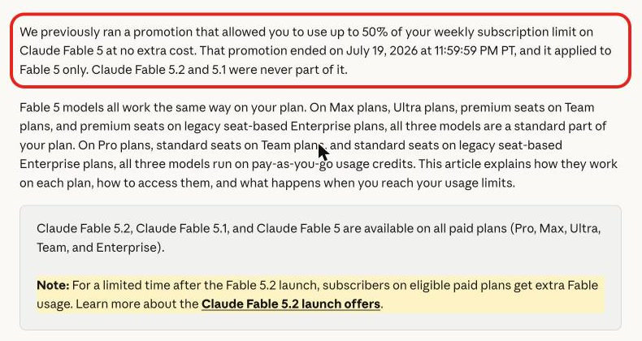
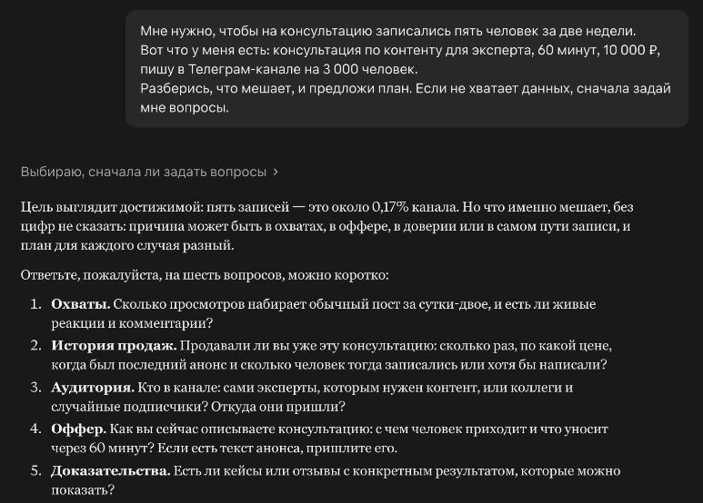
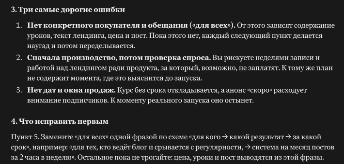
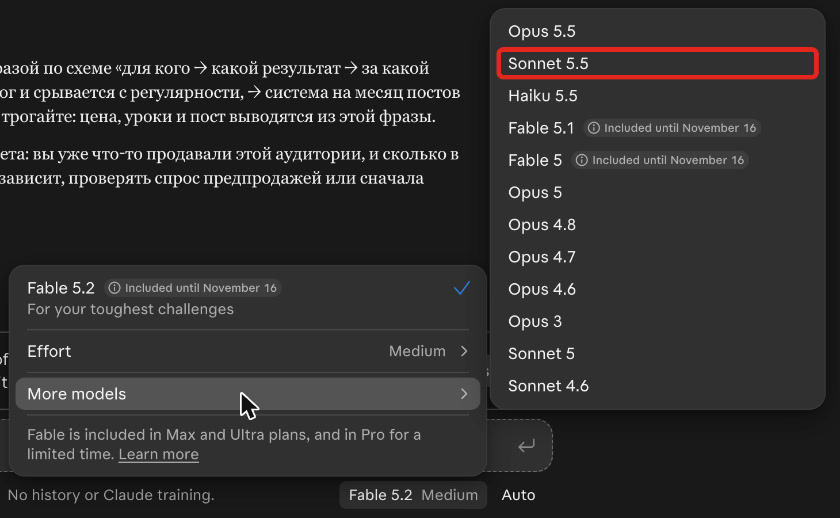

Дважды.
Как пользоваться самой умной нейросетью, когда её дают по чуть-чуть:
Самую умную нейросеть дают попробовать ровно настолько, чтобы мы ахнули.
Мы ахаем.
Летом я под это купила несколько больших аккаунтов Клода. Не один. Несколько. Примерно как люди, которые ночуют у магазина перед выходом нового айфона. Только без палатки.
Тогда вышла новая большая модель, и в первые дни её давали всем и щедро. Я заметила: в эти дни она работает лучше всего. Позже разница очень заметна. Я называю это время промо-днями.
На днях вышел новый Клод, и всё повторилось. Признаюсь: я чуть опоздала, щедрые дни у него заканчиваются прямо сейчас. Но это не последний раз. Сохраните этот текст. Каждый раз, когда выходит новая большая модель, о которой все говорят, попробуйте поработать с ней вот так.
Что внутри:
- почему первые дни новой модели самые выгодные;
- зачем она вам, если вы не программист;
- как ставить её дважды, а не гонять весь день.
Я прочитала за вас.
Условия простые и немного обидные.

Из справки Anthropic. Попробовать дают, жить в ней не дают.
Что это значит для нас с вами: самая умная модель теперь дорогое удовольствие. Вопрос уже не «как ей пользоваться», а «на что её тратить».
И моё личное мнение, не официальное: щедрые первые дни это реклама. Компании нужно нас впечатлить. Я не против, я этим пользуюсь. Если у вас есть время на новую модель, тратьте его в первые дни: это самое продуктивное время.
1. Задача, а не вопрос.
Умная модель нужна не для того, чтобы писать красивее.
Я не программист, и как пишет код ChatGPT, меня вполне устраивает. С картинками тоже всё хорошо. Вопрос всегда в мышлении: что делать, в каком порядке и на что тратить силы.
Поэтому я даю ей не команду, а намерение. Говорю, чего хочу добиться, и она идёт разбираться сама.
Было: Напиши пост про мою консультацию. Стало: Мне нужно, чтобы на консультацию записались пять человек за две недели. Вот что у меня есть: [описание, цена, где я пишу]. Разберись, что мешает, и предложи план. Если не хватает данных, сначала задай мне вопросы.

Отвечает хорошо. И сначала спрашивает, а не бежит писать.
2. Пусть найдёт ваши ошибки.
Для меня новая модель это стратег и ревизор. Она находит ошибки в том, что мы наделали с предыдущими.
Возьмите что-нибудь «вроде готовое»: план, текст, таблицу, длинную переписку с другой нейросетью. И отдайте на проверку.
Что получите: три главные ошибки и что чинить первым.
Цель: найди слабые места в том, что я уже сделала. Что у меня есть: [вставьте план, текст, таблицу или переписку]. Шаги: 1. Перескажи в трёх строках, чего я хотела добиться. 2. Покажи, где результат расходится с целью. 3. Назови три самые дорогие ошибки, начни с главной. 4. Скажи, что исправить первым. Правила: Не хвали. Не переписывай всё заново. Если не хватает данных, сначала задай мне вопросы.

Пример учебный. Свои рабочие планы я вам не покажу, там слишком много личного.
Скажу, как это выглядит изнутри. Ищешь чудо. Хочешь новое вау-решение. А чудо не приходит, и тебе опять показывают то, что ты не доделала. И когда на них тычет очередная умнейшая модель, идёшь, собираешься и делаешь.
Так. Что у вас уже есть:
- вы ставите задачу, а не задаёте вопрос;
- вы знаете три свои главные ошибки;
- осталось самое экономное.
3. Ставьте её дважды.
Отдавать умной модели всю работу целиком расточительно. Она супермозг. Руки могут быть попроще.
Я ставлю её два раза. В начале: разобраться в задаче и написать план. И в конце: проверить, получилось ли то, что задумано. Середину делает обычная модель.
В начале, умной модели: Напиши задание для другой нейросети. Она не видела наш разговор. Простыми словами: цель, что уже решено, шаги по порядку, что спросить у меня. В конце, снова умной: Вот задача, которую я ставила. Вот что получилось. Это соответствует задаче? Где нет? Что поправить первым?

1. Нажать на имя модели. 2. More models. 3. Выбрать попроще, например Sonnet. А плашка «до 16 ноября» рядом с новой моделью это и есть промо-дни.
Это излишество, я знаю. Можно оба раза поставить модель попроще. Но обычно токенов много, а времени мало.
С чего начать.
Сегодня: возьмите одну «вроде готовую» работу и отдайте на ревизию, шаг 2.
На этой неделе: одну большую задачу проведите по схеме «дважды».
Мне всегда нравятся новые большие модели Клода. Не потому что они пишут красивее. С ними можно разговаривать задачей, а не командой. Она идёт разбираться. А ты, скрестив пальцы, надеешься, что ей хватит токенов.
ИИ для взрослых. Показываю по шагам, как им пользоваться.
Перешлите это тому, кто только что оформил подписку и не знает, с чего начать.